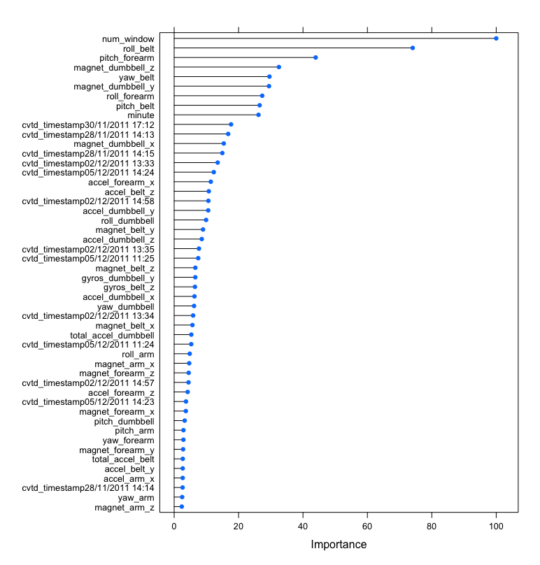

The purpose of the project is to predict the manner in which they did the exercise, which means to predict the dependent variable "classe". The overall approach will be as follows:
All R studio code can be found here
In total we have 19622 observations in the dataset, with 165 variables/columns
After analyzing that data it's apparent that there are timestamp variables that cannot be consumed by our machine learning train function, therefore w eneed to split the data into year, month, day, hour, minute.
data$year <- as.numeric(substr(data$cvtd_timestamp, 7, 11));
data$month <- as.numeric(substr(data$cvtd_timestamp, 4, 5));
data$day <- as.numeric(substr(data$cvtd_timestamp, 1, 2));
data$hour <- as.numeric(substr(data$cvtd_timestamp, 12, 13));
data$minute <- as.numeric(substr(data$cvtd_timestamp, 15, 16));
Next we remove columns that are redundant or not required in the dataset.
data = data[, !(colnames(data) %in% c("X", "raw_timestamp_part_1",
"raw_timestamp_part_2", "evtd_timestamp"))];
Lastly we cast all columns that are numeric to the "numeric type"
data$kurtosis_roll_belt <- as.numeric(data$kurtosis_roll_belt);
data$kurtosis_picth_belt <- as.numeric(data$kurtosis_picth_belt);
data$kurtosis_yaw_belt <- as.numeric(data$kurtosis_yaw_belt);
data$skewness_roll_belt <- as.numeric(data$skewness_roll_belt);
.......and so on
Next we split the data into testing and training subsets
inTrain <- createDataPartition(data$classe,
p=3/4,
list = FALSE);
training <- data[inTrain,];
testing <- data[-inTrain,];
It's apparent that there are quite a few missing values in some of the predictor variables so to help with model training we impute with a median.
preObj <- preProcess(training[,-156], method="medianImpute");
training.imputed <- predict(preObj, training);
Next we train our model using cross-validation, so the training set is split further into train/test subsets and the best model is selected, I've chosen to use a random forest for this classification problem, since it can handle co-linear, sparse, and non-normality in the predictor variables. Also we can simplify the model later by analyzing the varibale importance (via varImp) post training and select a subset of significant predictors, which will also help us avoid overfitting.
control <- trainControl(method='repeatedcv',
number=5,
repeats=3);
modFit <- train(classe ~ ., data=training.imputed, method="rf", trControl=control);
modFit
Random Forest
14718 samples
164 predictor
5 classes: 'A', 'B', 'C', 'D', 'E'
No pre-processing
Resampling: Cross-Validated (5 fold, repeated 3 times)
Summary of sample sizes: 11775, 11774, 11774, 11776, 11773, 11773, ...
Resampling results across tuning parameters:
mtry Accuracy Kappa
2 0.5998595 0.4659081
123 0.9972141 0.9964760
245 0.9957420 0.9946136
Accuracy was used to select the optimal model using the largest value.
The final value used for the model was mtry = 123.
The accuracy of the model is extremely high at 0.9972 with a "mtry" value = 123 and all predictor variables in scope, however it's extremely unlikely that all predictor variables are significant and leaving them all in the model scope may lead to overfitting, therefore we should take a look at predictor variable importance using varImp.
rfImp <- varImp(modFit, scale=TRUE);
plot(rfImp, top=50);

I made a decision to keep only th top 20 predictors in the model and see what loss in accuracy results.